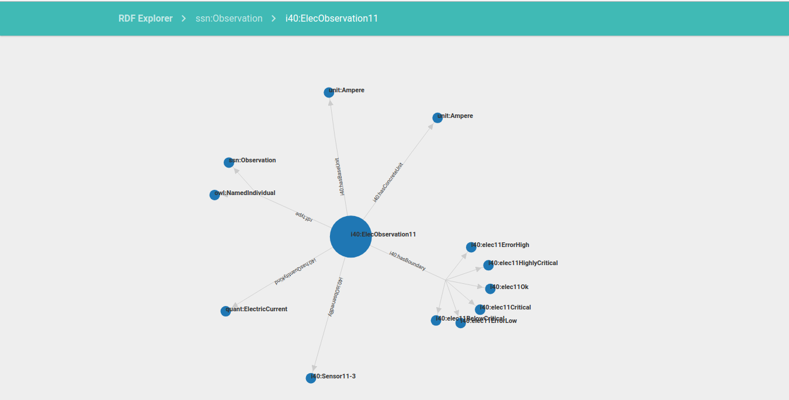
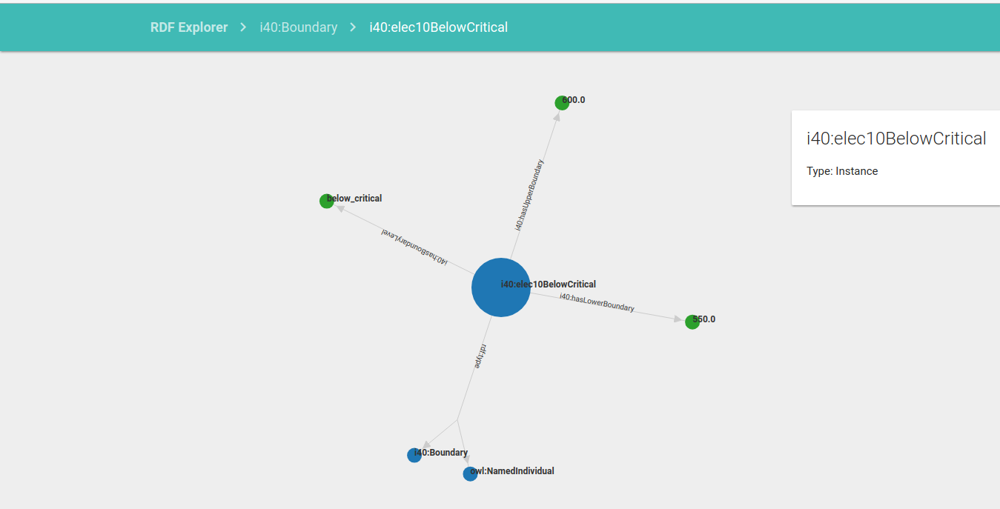

Final Product Screenshots
 

HCI Principles
Visibility
One of the most important HCI principles is visibility. Our RDF explorer places the controls in a highly visible location. People can see all possible operations when they traverse through the data in our app. For example, in the Classes page and the Instances page, the lists of classes or instances are shown obviously and people can find a search box easily from the top of the lists. Moreover, we show all information of a instance in the instance page from up to down. It is easily for users to familiar with the app structure.
Affordance
In the case of our app, we design the user interface with simple components (text, search box and relationship graph). Users can find the use of all components easily without any guides.
Feedback
For the feedback part, our app will show warning information in the table if it hasn’t get any data from the database when an user using our app. Furthermore, for all clickable buttons and search boxes in our app, they have “click” animations for giving users feedback
Mapping
We have a good mapping in the case of our page control buttons. (the screenshot of our page control buttons) And also our navigation bar. (the screenshot of our navigation bar)
Consistency
We have consistent UI throughout the whole app for users to operate. And also we keep the display of instances or resources information in a same way.
Constraints
There are no constraints in our app since we don’t need to prevent users from selecting incorrect options. We have tried to make it straightforward to use our app.
HCI Analysis
For the convenience of users that using our web application, we must guide them through each page and making the web application easy to use. This is also one of requirements from the client. Therefore we will use our human computer interaction knowledge to create an expected engineer to show how our application works and how we can improve our application.
Engineer:
John, A 25 years old engineer, he works in Bosch now. He has a lot of development experience.
Scenario:
John is an engineer who works in Bosch and he tries to find the relationship of one particular node with others nodes. Then he uses the old application in his computer to find the special node. He opens the application and clicks the database that includes this node. Then he chooses the class that includes this node and then he clicks this node. However, the node information is not enough. John cannot find nodes that are related to this node and classes that the node belongs to. Moreover, John don’t remember what is the path that he clicks into the node and it confuses him. After that, he hears that there is a new website application created by some students in UCL. He enters this application and repeats these motions that he did in the old application. He finds the new application has a navigation bar to show where he is at real time and the navigation bar shows the path from the home page to the current page. In the node page, John can clearly find relative nodes information and the node page lists all classes that the node belongs to. The new application exactly meets the demand of John.
HCI Considerations:
Breadcrumbs trail (navigation bar): Our client has requested that the system must show users where he is and the path from the home page to the current page. The main feature from which that we will use is the navigation bar at the top of the page. This shows a directory tree of pages above the current one. For example, it could show Home > Database3 > Class 1 > Node 13 > Property 5.
Prototypes
You can see all the prototypes we developed and showed to the clients. For each prototype, there is a video, along with a short descriptive text, explaining the reasoning behind our design choices, the feedback we had from the prototype, and what we learned from it. We have also provided the code for our final prototype.
Prototype 1
This is our first prototype. It shows a very simple way of traversing the data.
You can see a list of every node, property, and class that exist in the whole database.
By clicking on a node, you can see interesting details that concern it (the classes it belongs to,
its properties). By clicking on a property, or a class, you can see every node that belong to that
class / has that property.
This prototype contributed to our overall understanding of the project.
It enabled us to have a common ground with the clients. As a consequence,
our meeting/prototype presentation was very fruitful.
For this prototype, we weren't focusing on how good the interface looked, we only wanted to
demonstrate the funtionality.
Prototype 2
After meeting with the clients and getting feedback on the first prototype, we decided to try out two different ideas. Each one is based on a different idea/need shared by the clients. This is the first one. It was made to meet the need for a visual representation of the database and of the relationships that existed in it. This prototype is based on a graphical representation of the nodes and their relationships. You can see that representation on the right side of the screen. When on a class’s page, you can see all the nodes that belong to it, and the relationships they all have between themselves. When on a node’s page, you can see all the other nodes this one is connected to, along with its relationship with them.
Prototype 3
This is the second idea we tried. This one was made to meet the need to see the “big picture”, of not getting lost in the database by knowing where you are. This prototype is based on breadcrumbs, that show you your path, and what you visited before. You can click on those breadcrumbs to re-visit somewhere you’ve already been to. Each breadcrumb hides a dropdown, that shows you similar items. For example, a breadcrumb showing that you visited a certain class might give you the choice of visiting other classes in its dropdown.
Download PrototypeExperiment Log
| No | Title | Details | Results | Success and Failure | Done By | Date |
|---|---|---|---|---|---|---|
| 1 | Transpiling JSX | We need to choose a good build tool to be able to transpile JSX (from our React code) into ES6 Javascript. | We were successfully able to transpile using Gulp and Babel | We successfully integrated transpiling into our build process | Anirudh | 14/11-17/11 |
| 1.1 | Setting up Babel | We experimented with using babel and babel loader | We set up the packages for Babel and React but still weren't able to transpile | We successfully set up all the packages and dependencies for Babel | Anirudh | 14/11-15/11 |
| 1.2 | Adding Gulp | We added Gulp as a build tool to help us transpile. | We wrote a config file for Gulp (gulpfile) with settings to transpile our .jsx files | It was difficult to figure out how to write the gulpfile be we managed to set it up perfectly in the end. The transpiling worked whenever we ran Gulp. | Anirudh | 15/11-16/11 |
| 1.3 | Adding script to run on startup | We wrote a script to automatically run Gulp when changes are detected. | Gulp now watched our files for changes and automatically transpiled our .jsx files whenever they were saved with changes. | Now we were all set up to write JSX code. | Anirudh | 16/11-17/11 |
| 2 | Using Circle CI for continuous integration | We had to try setting up Circle CI to automate our testing process. | We managed to get Circle CI to run our tests whenever we pushed to our development branch | We learnt how to write tests in Jest and also to work with continuous integration tools | Anirudh, Aksel | 17/11-28/11 |
| 2.1 | Writing tests in Jest | We wrote up a file with some tests on our sample application | We had to learn Jest for writing the tests | Jest was a really good testing tool for Redux and we were able to write the tests | Anirudh, Aksel | 17/11-22/11 |
| 2.1.1 | Adding the process of running tests to build process | We configured our gulpfile to run our tests | Gulp runs our tests while starting the server | We learnt how to write tests in Jest | Anirudh, Aksel | 20/11-21/11 |
| 2.1.2 | Adding a script to run tests | We modified the package.json to add a script to run our tests whenever we run 'npm test' | We can now type 'npm test' in our repo to run the tests | We successfully set up the test script | Anirudh, Aksel | 21/11-22/11 |
| 2.2 | Setting up Circle CI | We set up Cricle CI for continous integration | We successfully automated our testing process | We set up the .yml file and hooks to listen whenever we pushed to our development branch. | Anirudh | 22/11-28/11 |
| 2.2.1 | Writing the circle.yml | We had to set up configurations for our continous integration tool | The .yml file helped us set up the container for testing | We were successfully able to set up the .yml configurations | Anirudh | 22/11-24/11 |
| 2.2.2 | Setting up Circle CI to listen for changes on our development branch | We had to add hooks so that Circle CI watches changes on our development branch | Circle CI was running our tests whenever we pushed our code to master | We successfully automated our testing process | Anirudh | 24/11-28/11 |
| 3 | Breadcrumbs for user navigation | We tried designing a new navigation system for the GUI | We came up with a new way to navigate the GUI | The client really like the new navigation system | Anirudh, Aksel | 28/11-07/12 |
| 3.1 | Finding GUI element for creating the breadcrumbs | We decided on using Materialze CSS to get a prebuilt component for the breadcrumbs | Materialize CSS handled the design so we only needed to handle links between the data | We successfully implemented the component from Materialize CSS which helps us create the breadcrumbs | Anirudh, Aksel | 28/11-03/12 |
| 3.2 | Finding GUI element for creating the breadcrumbs | Linking the breadcrumbs to the data | We designed a way to show the navigation links by adding dropdowns to the breadcrumbs | The dropdowns worked really well with the breadcumbs and allowed us to present lots of links in a clean and easy comprehensible way | Anirudh, Aksel | 03/12-07/12 |
| 4 | Setting up ESLint | We needed to set up ESLint to catch error and achieve consistency in our code | We set it up to use the Airbnb Javascript style guide (recommended) so that our code is linted properly. It will mean the entire codebase is written in the same style, thus helping us achieve consistency | We got ESLint working nicely and also integrated it into Gulp, our taskrunner. | Anirudh | 07/11-10/12 |
| 5 | Setting up Webpack | We set up Webpack to help bundle our dependencies | Webpack will help to handle our imports and dependencies and also in bundling them. | We got it working perfectly and also integrated it with Gulp | Anirudh | 07/11-10/12 |